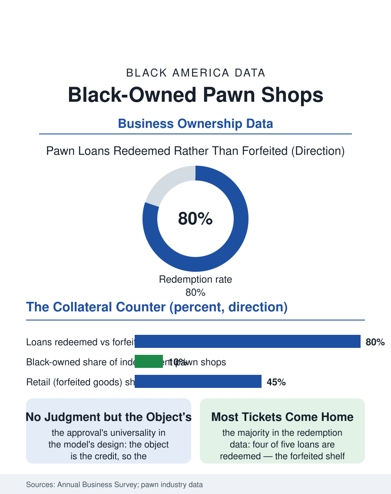

Black Business
The Ticket Home: Black-Owned Pawn Shops
The object is the credit, most tickets come home, and the counter is both the bank and the thrift of its neighborhood. The pawn file.

The pawn shop is the oldest consumer lender in the business section and the most argued over: the collateral loan at the counter, no credit check because the object is the credit, in a trade whose stores cluster in the same neighborhoods as the alternative finance file's and whose local ownership includes a long Black tier. This article reads the pawn file.
The Object Is the Credit
The model's elegance is its antiquity: the borrower leaves the item, receives the fraction of its value in cash, and redeems it with the interest within the term or forfeits it to the shelf, a transaction requiring no account, no history, and no judgment of the borrower beyond the object's worth, which makes the pawn counter the one lender in the financial files whose approval rate is effectively total for anyone holding anything of value, a universality the unbanked file's population has used in every era including the current one's data. The store's second business is the retail of the forfeited, the shelf of instruments and tools and jewelry priced by the proprietor's eye in the resale file's terms, so that the pawn shop is simultaneously the bank and the thrift of its neighborhood, a duality its critics read as the extraction's two doors and its defenders as the liquidity and the bargain in one room. The firearm's presence in the inventory is the trade's most regulated shelf, the federal license's paperwork making the pawn counter a node of that file as well, and the proprietor's compliance in both ledgers, the police's and the bureau's, is the license's full price, paid in the back office's hours that the customer never sees.
Regulation and the Police Ledger
The trade's regulation is the file's distinctive weight: the state pawn statutes' rate caps and term floors, the reporting of every transaction to the police database in the modern systems, the holding periods and the identification requirements that make the counter a node in the property crime's investigation network, a function the proprietor performs as the license's price and the neighborhood's ambivalence, the same ledger that recovers the stolen television also recording the borrower's necessity in the state's file. The consolidation of the trade's top into the public chains, whose stores standardize the counter's terms, leaves the independent's defense in the knowledge of the clientele and the eye for the object, as in the other trades' files. The online pawn and the luxury collateral lenders of the current era have stratified the model's top, the watch and the handbag loaned against at the private bank's manners, a tier whose existence the corner store's proprietor notes with the trade's dry humor.
The Counter's Verdict
The pawn file closes on the counter's verdict in the community's own accounting, which is more forgiving than the policy debate's: the redeemed loan's rate, annualized in the critics' arithmetic, is in the borrower's arithmetic the price of the emergency met without the bank's refusal or the family's knowledge, a privacy and a certainty the market's other doors do not sell at any price, and the shop's longevity in the neighborhood, against every reform era's prediction of its death, is the demand's testimony in the pattern of the storefront file's. The census counts the pawn shops within the consumer finance categories, the local tier's ownership following the corridor's general pattern. The file's last entry is the ticket redeemed on payday, the guitar or the ring or the tools of the trade itself going home in the borrower's hands as they have in the great majority of the loans since the form was invented, the shelf's forfeits being the minority the critics photograph and the redemptions the majority the neighborhood counts on, a ratio the proprietor can recite and the file, in fairness, closes with. The window's display, the saxophone and the saddle and the television in their arrangement, is the neighborhood's museum of its own necessities and dreams, curated by forfeiture and read by every passerby as the block's honest price list. The saxophone, in the window's long tenancy, has been loaned against and redeemed so many times the proprietor greets it as a tenant. The tenant's rent, in its way, is always paid.
More in Black Business
Black-Owned Businesses: Counts, Receipts, and the Representation Gap
About 161,000 Black-owned employer firms and three million solo ventures: how the Census Bureau counts Black business ownership, where firms concentrate, and the gap between population share and business share.
Black Median Net Worth: The Wealth Gap in Federal Reserve Data
The Federal Reserve puts Black median family net worth at $44,900, against $285,000 for White families — about 16 cents on the dollar. The widest gap in economic data.
Black Buying Power: The $1.8 Trillion Consumer Economy
Black buying power is estimated at about $1.8 trillion — larger than the economy of most nations. What the figure measures, who produces it, and what it buys.
Source: U.S. Census Bureau, Annual Business Survey for pawn shops; National Pawnbrokers Association data.